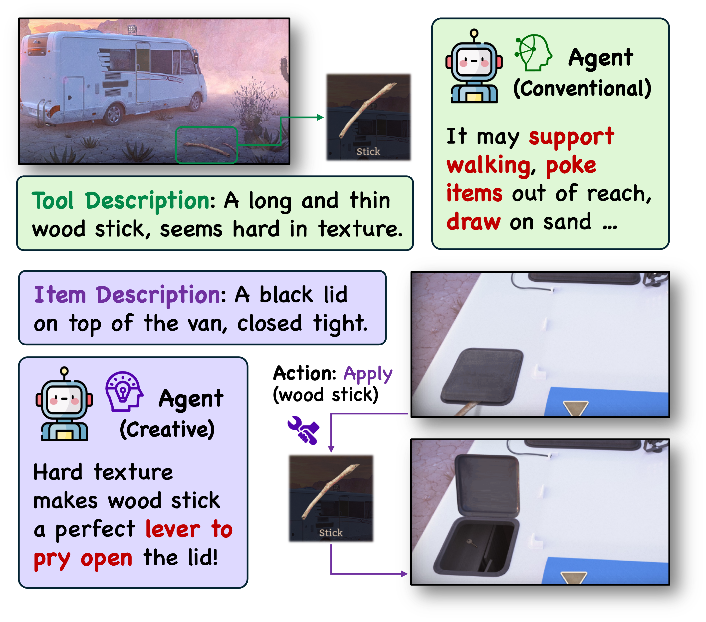
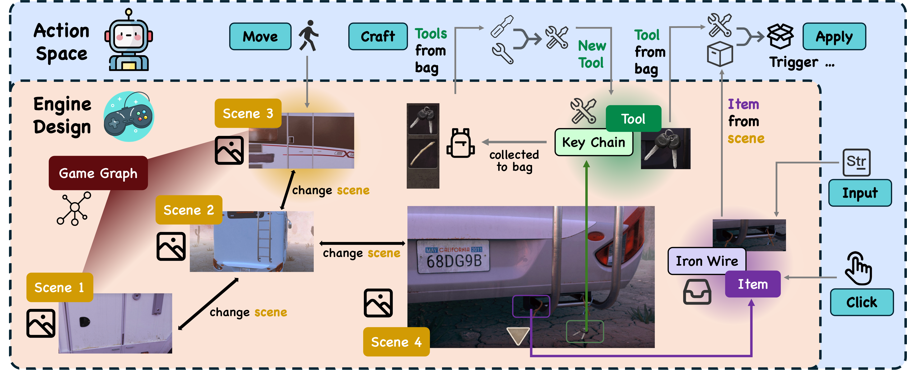
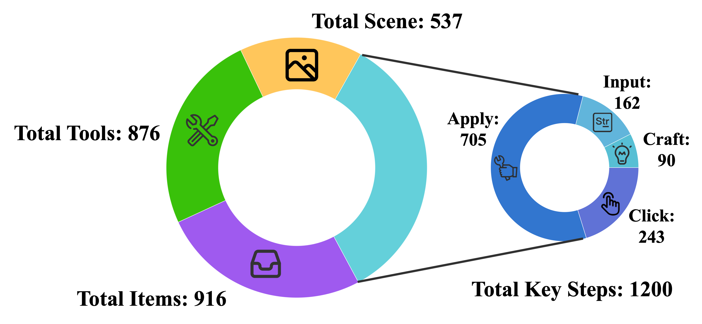
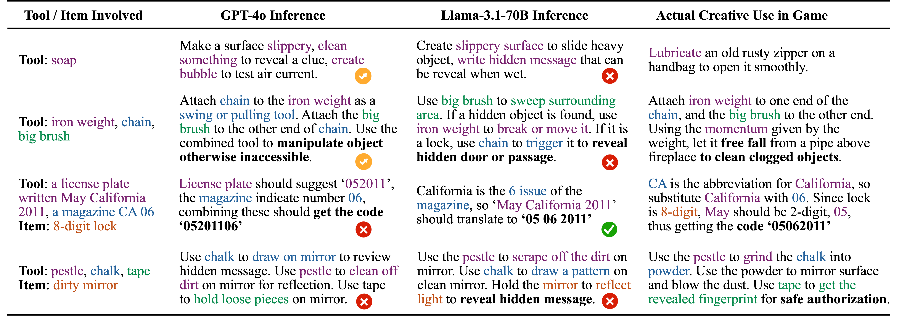
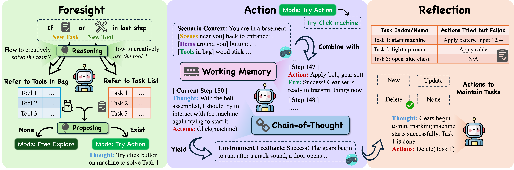
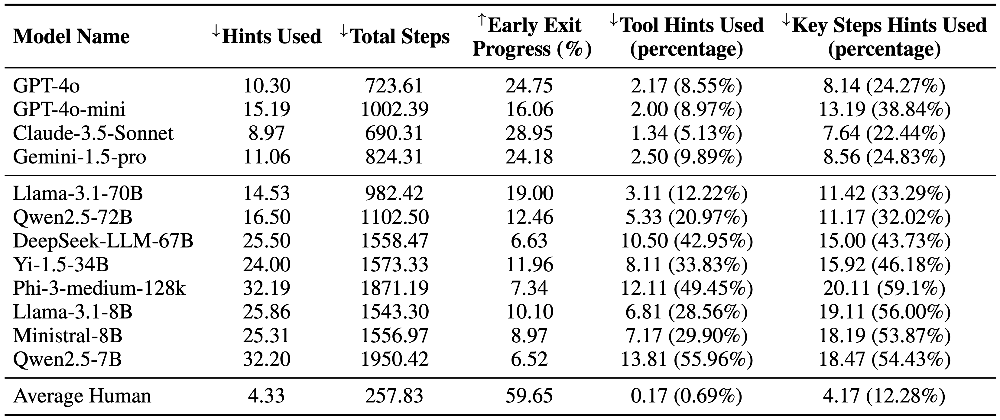
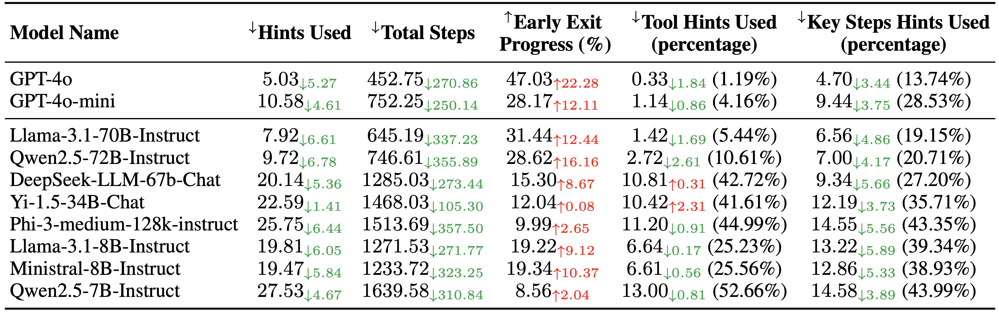
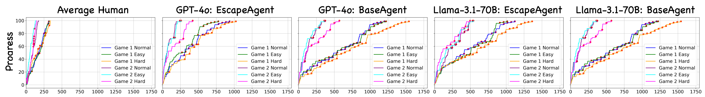

Language model agents excel in long-session planning and reasoning, but existing benchmarks primarily focus on goal-oriented tasks with explicit objectives, neglecting creative adaptation in unfamiliar environments. To address this, we introduce EscapeBench—a benchmark suite of room escape game environments designed to challenge agents with creative reasoning, unconventional tool use, and iterative problem-solving to uncover implicit goals.
Our results show that current LM models, despite employing working memory and Chain-of-Thought reasoning, achieve only 15% average progress without hints, highlighting their limitations in creativity. To bridge this gap, we propose EscapeAgent, a framework designed to enhance creative reasoning through Foresight (innovative tool use) and Reflection (identifying unsolved tasks). Experiments show that EscapeAgent can execute action chains over 1,000 steps while maintaining logical coherence. It navigates and completes games with up to 40\% fewer steps and hints, performs robustly across varying difficulty levels, and achieves higher action success rates with more efficient and innovative puzzle-solving strategies.

✨Creative Tool Use: The tools at hand might be repurposed for creative use in order to solve the puzzle. These innovative ways of tool use are uncommon in the LM agent's existing parametric knowledge, requiring it to reason creatively and adapt its observation into customized scenarios.
✨Uncertain Goal Pathways: While the final goal of each game is escaping from the room, the pathways to achieving it cannot be explicitly foreseen. An agent cannot devise precise, long-range plans initially and must rely on trial and error to discover viable strategies.
✨Super-Long Reasoning Chain: Each scenario requires even an omniscient agent to perform over 100 steps, with at least 40 bottleneck actions required to achieve the goal. A human player may take up to an hour to complete one game.

Most agent benchmarks focus on explicit, goal-oriented tasks grounded in commonsense knowledge, where agents can chart clear pathways to achieve goals using analytical and practical intelligence, but they often overlook creative intelligence. This raises our core research question: How to build an environment that benchmarks an agent's creative intelligence? Given that tool use is central to agent functionality, we propose room escape game scenarios, which naturally require creative tool use to solve complex puzzles, as an ideal environment for this evaluation.
Game Engine: The game engine aims to simulate the room escape environment that receives agent actions and makes corresponding environment feedback as agent action's reward. Specifically, our game engine involves three key components:
• 🌌 Scenes: The container of tools and items, connected with each other forming a graph structure that constitutes the whole game scenario.
• 📦 Items: Objects that are intractable in each scene. Tools, inputs, and other interactions may be applied to trigger its state change or other effects.
• 🔧 Tools: Objects that could be collected in each scene, usually applied to other items to take effect or to other tools to craft new ones.
Action Space: The model agent could take five different actions. While the action space is well-defined, the parameter space—regarding the scenes, items, or tools involved in these actions—is high-dimensional, thus allowing for dynamic interactions:
• 🏃 Move (Scene): Move to an adjacent scene.
• 🖲️ Click (Item): Click to simply interact with an item in the scene.
• 🔧 Apply (Tool, Item): Apply a tool in the bag to an item in the scene.
• ⌨️ Input (str, Item): Input an arbitrary string to an item in the scene.
• 🛠️ Craft (Tool, Tool): Use two tools in the bag to craft a new one.

Statistics: We present EscapeBench which features 36 game settings across three difficulty levels. All scenes, items, and tools are manually annotated to ensure high quality. These scenarios emphasize creative tool use and crafting strategies, challenging agents throughout the game, making EscapeBench a robust environment for testing creativity. We show in preliminary case study below that current models struggle to solve these creative reasoning cases, indicating the need for a more creative agent.

To address challenges identified in the preliminary study, we introduce EscapeAgent, a framework addressing two core issues from EscapeBench:
• 🔍 Uncertain Goal Pathways: We introduce a Reflection module, which dynamically maintains a task list by adding, updating, or removing tasks after each trial-and-error action. This approach fosters proactive task discovery and sharpens the agent's focus on specific goals.
• 💡 Creative Tool Use: We design a Foresight module that facilitates explicit reasoning about creative tool applications and their alignment with specific tasks. It enables the agent to hypothesize and evaluate strategies before execution, thus promoting problem-solving.
Integrating both modules with a 🤖BaseAgent, EscapeAgent excels in handling Super-long Reasoning Chains and significantly boosts the model's creativity, problem-solving, and strategic thinking.

The 🤖BaseAgent serves as the foundation of EscapeAgent, taking actions based on the scenario context provided by the game engine and updating its working memory with environment feedback after each step. It employs Chain-of-Thought reasoning to determine the next action and acts as a strong baseline for EscapeBench.
The 🔍Reflection Module enables the agent to maintain a structured task list, updating it by adding new tasks, recording failed actions, or deleting completed tasks. This organization prevents repeating ineffective actions, enhancing efficiency.
The 💡Foresight Module enhances creative reasoning by evaluating tool use and potential strategies. It activates when a new task is identified or a new tool is collected, generating valid action hypotheses. If successful, the agent enters a “Try Action” state to test the proposed actions, otherwise, it remains in a “Free Explore” state.
Together, these modules enable the agent to adapt, hypothesize, and efficiently solve tasks in a dynamic environment.
Experiments are conducted on 36 game settings. An agent is considered to be making progress if it either achieves a key step or collects a new tool. Agents will receive help if they fail to make progress for 50 consecutive actions.
We benchmark over multiple open- and closed-source models, and apply Total Hints and Total Steps as evaluation metrics. The results show that EscapeAgent always outperform BaseAgent, using less hints and steps to complete the game.


Case study: We also present here a case study of agent progress relative to action steps across six game settings. Red dots indicate steps where hints were provided. We observe the following:
• EscapeAgent requires significantly fewer hints and achieves a steeper progress curve.
• EscapeAgent demonstrates the ability to make consecutive progress in shorter intervals (e.g., the light blue and pink lines for both GPT-4o and Llama-3.1-70B).
• Harder scenarios remain challenging, especially for BaseAgent, which often relies heavily on hints to make progress (e.g., the later part of the yellow line for GPT-4o).
• Average human still performs far better than all agents, while both agents still struggle with short memory due to context length and creative tool use strategies.

@article{qian2024escapebench,
title={EscapeBench: Pushing Language Models to Think Outside the Box},
author={Qian, Cheng and Han, Peixuan and Luo, Qinyu and He, Bingxiang and Chen, Xiusi and Zhang, Yuji and Du, Hongyi and Yao, Jiarui and Yang, Xiaocheng and Zhang, Denghui and Li, Yunzhu and Ji, Heng},
journal={arXiv preprint arXiv:2412.13549},
year={2024}
}